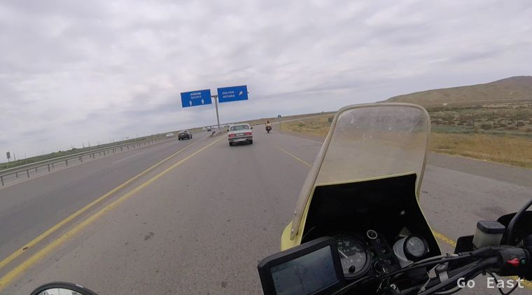
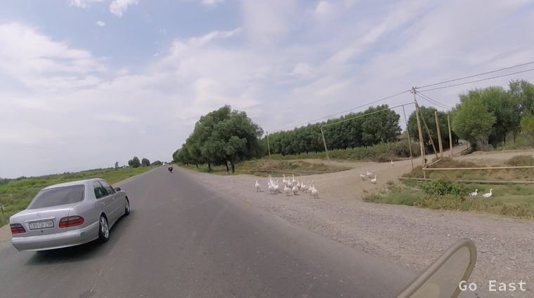
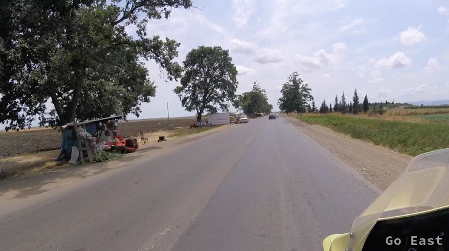
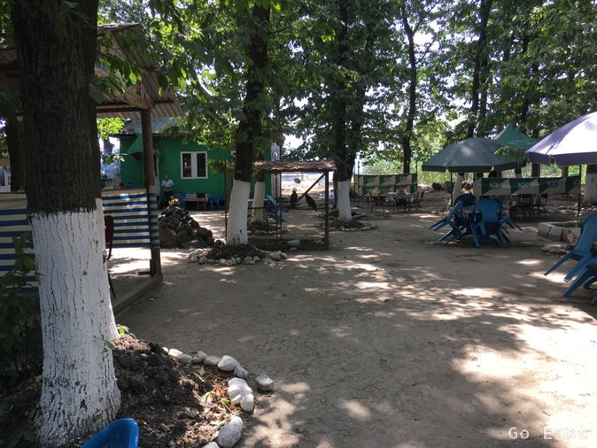

Leeres Restaurant morgens um 7:30
Leere Straße morgens um 7:30

Leere Straße morgens um 7:30
Morgens 7:30 hat es schon 28 Grad. Unser Frühstücksrestaurant, das 24 h offen hat und sich gleich neben unserem Hotel befindet, ist leer. Die Stadt schläft noch. Ich fülle nach 5.000 km Laufleistung 0,5 l Öl nach am Motorrad. Gegen 9:30 fahren wir los Richtung Süden auf einer Autobahn, deren Teilstück so neu ist, dass es noch nicht im Navi ist.
Die Landschaft wechselt zwischen Steppe und Ackerland. Das Teilstück der neuen Autobahn endet und wir setzen die Fahrt auf der alten Trasse fort. Diese ist eine vielfach ausgebesserte Strasse mit Senken, die durch den Schwerlastverkehr gelitten hat.
Wir passieren Dörfer mit emsigen Treiben. Überall werden Melonen, Tomaten etc. am Straßenrand angeboten. Wir halten an einer Raststelle in einem Wäldchen, bestehen aus kleinen Hütten und bekommen hervorragenden Kebab. Der junge Mann, der das Essen bringt erzählt, dass er Physik Lehrer studiert in Baku.
Unterwegs nach Astara

Unterwegs nach Astara

Unterwegs nach Astara

Unterwegs nach Astara
Unterwegs nach Astara

Unterwegs nach Astara
Unterwegs nach Astara
Rastplatz

Rastplatz
Die heutige Schwüle mit 35+ Graden und das Essen setzen uns heute so zu, dass wir noch eine kurze Nickerchenpause einlegen müssen bis wir in Astara eintreffen. Astara ist die Grenzstadt zum Iran und wird durch den Grenzfluss Astarachay getrennt. Wir finden das Hotel Sindan und sind die einzigsten Gäste und bekommen das Zimmer für umgerechnet 15,- Eur.
Hotel Sindan
Die Lenkerplatte am Motorrad hat sich durch die vielen Schlaglöcher wieder etwas gelockert und gibt beim Fahren Geräusche von sich. Das wird schnell mit dem 36er Ringschlüssel behoben, den wir für solche Fälle dabei haben. Die Schraube wird angezogen und zudem mit RapidFuse-Kleber gesichert.
Im nebengelegenen Restaurant bekommen wir eine einfache Mahlzeit und das letzte Bier für die nächsten Tage, da im Iran ein Alkoholverbot besteht. Alle Leute sind sehr freundlich und wollen wissen woher wir kommen und was die Maschinen kosten. Viele wollen auch ein Selfie mit uns.
Bier